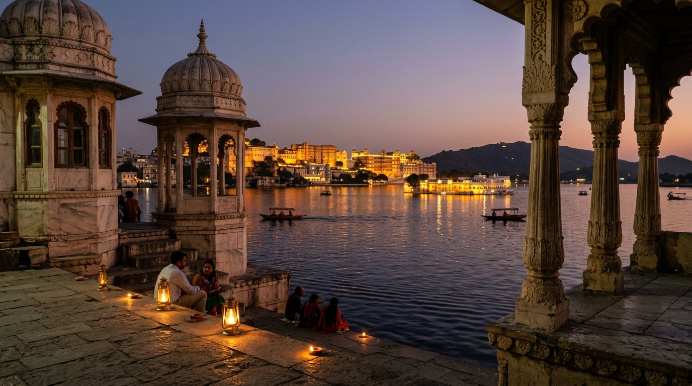
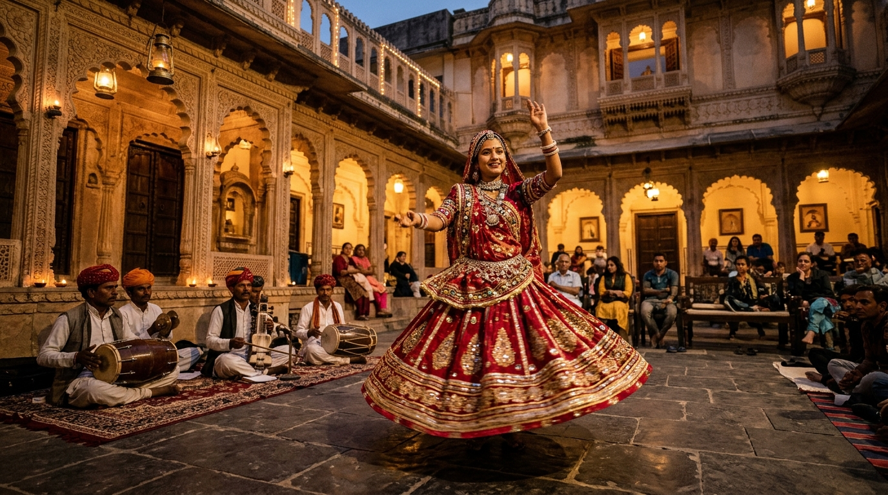
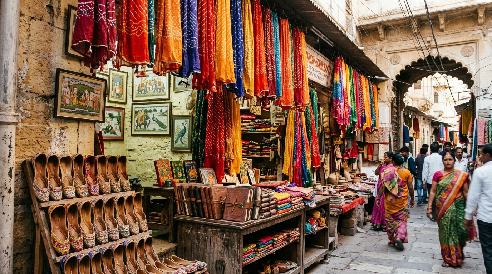

"उदयपुर को अक्सर सिर्फ 5-स्टार पैलेस और महंगी शादियों का शहर समझा जाता है। लेकिन थोड़ी समझदारी से घूमें, तो झीलों के इस शहर की पुरानी गलियां, शांत घाट और छत पर कुल्हड़ वाली चाय का मजा बहुत कम खर्च में लिया जा सकता है।"
उदयपुर का नाम लेते ही दिमाग में पानी के बीच बने सफेद संगमरमरी महल आते हैं। लेकिन सच यह है कि उदयपुर की असली खूबसूरती पिछोला झील के शांत घाटों पर, सुबह की गरमा-गरम प्याज कचौरी में, और ओल्ड सिटी की पुरानी हवेलियों में बसती है।
अगर आप इस गुलाबी ठंड में उदयपुर जाने की सोच रहे हैं, तो यह दोस्ताना गाइड आपके लिए है। इसमें हम जानेंगे कि कैसे सिर्फ ₹5,000 से ₹5,500 के बजट में आप पूरे 3 दिन उदयपुर को राजाओं की तरह सुकून से घूम सकते हैं।
इस गाइड में क्या-क्या है:
1. कब जाएं और कैसे पहुंचे?
सबसे सही समय: अक्टूबर से मार्च। खासकर नवंबर-दिसंबर में दिन में 24°C की गुनगुनी धूप और शाम को हल्की ठंड होती है, जो घूमने के लिए सबसे मुफीद है। गर्मियों में तेज धूप से बचें।
ट्रेन से (सबसे सस्ता)
दिल्ली से चेतक या मेवाड़ एक्सप्रेस रात को चलती है और सुबह उदयपुर पहुंचा देती है। स्टेशन से ओल्ड सिटी सिर्फ 3 किमी है।
फ्लाइट से
एयरपोर्ट 22 किमी दूर है। कैब या शेयरिंग टैक्सी ₹600 से ₹800 में मिल जाती है।
बस से
अहमदाबाद से 4.5 घंटे और जयपुर से 6 घंटे में स्लीपर बसें रातभर चलती हैं।
2. कहाँ ठहरें: ₹2,000 से कम में हेरिटेज हवेलियां
उदयपुर का सबसे बड़ा सीक्रेट: झील का नजारा देखने के लिए महंगे पैलेस की कोई ज़रूरत नहीं है!
पिछोला झील किनारे ओल्ड सिटी में 150 साल पुरानी हवेलियों को साफ गेस्टहाउस में बदला गया है:
- हनुमान घाट: सबसे शांत इलाका। कमरों और रूफटॉप कैफे से सामने सिटी पैलेस दिखता है। किराया: ₹1,400 से ₹1,800 प्रति रात।
- लाल घाट व चांदपोल: बाजारों और कैफे के पास। झरोखों वाले साफ कमरे ₹1,200 से ₹1,800 में मिल जाते हैं।
3. क्या देखें: खास महल और मुफ्त के शांत घाट

सिटी पैलेस (City Palace)
मेवाड़ का यह विशाल महल 400 सालों में बना। यहाँ का मोर चौक और शीश महल देखने लायक है। टिकट ₹300 का है। सुबह ठीक 9:00 बजे पहुंचे ताकि बिना भीड़ के आराम से देख सकें।
उदयपुर के घाट: जहाँ एक रुपया भी खर्च नहीं होता
- अंबराई घाट (मांझी घाट): सिटी पैलेस के सामने। शाम 5:15 बजे पहुंचे। सूरज डूबते ही जब महलों की लाइटें जलती हैं और पानी में उनका अक्स दिखता है, तो वह नजारा लाजवाब होता है।
- गणगौर घाट: बागोर की हवेली के पास। सुबह कबूतरों को दाना चुगते देखना और शांति से बैठना बहुत सुकून देता है।
जगदीश मंदिर व सहेलियों की बाड़ी
जगदीश मंदिर: 1651 का प्राचीन नक्काशीदार मंदिर। एंट्री फ्री है। सुबह 7 बजे की आरती बहुत शांत कर देती है।
सहेलियों की बाड़ी: बिना बिजली के पानी के दबाव से चलने वाले फव्वारों वाला हरा-भरा शाही बगीचा। टिकट मात्र ₹20 है।
4. क्या करें: वो अनुभव जो बिल्कुल न छोड़ें

बागोर की हवेली का 'धरोहर' लोकनृत्य शो
हर शाम 7:00 बजे खुले आंगन में यह 1 घंटे का शो होता है। सिर्फ ₹100 के टिकट में कठपुतली, आग की चरी वाला नृत्य, और कांच पर 9 मटके सिर पर रखकर किया जाने वाला भवाई डांस देखने को मिलता है। शाम 6:00 बजे पहुंचे ताकि आगे की सीट मिल सके।
पिछोला झील में सनसेट बोट राइड (किफायती तरीका)
सिटी पैलेस के अंदर बोट राइड ₹800–₹1,000 की है। लेकिन दूध तलाई या लाल घाट की जेटी पर वही 45 मिनट की शेयरिंग राइड सिर्फ ₹250 से ₹350 में मिल जाती है! नजारा बिल्कुल एक जैसा दिखता है।
5. शॉपिंग गाइड: क्या और कहाँ से खरीदें?

| क्या खरीदें | कहाँ से खरीदें | कीमत | टिप |
|---|---|---|---|
| बांधनी व लहरिया दुपट्टे | बड़ा बाजार व मालदास स्ट्रीट | ₹250 – ₹600 | बारीक गांठों की सिकुड़न असली बांधनी की पहचान है। |
| हाथ से बनी लेदर डायरियां | हाथीपोल बाजार व घंटाघर | ₹150 – ₹400 | हैंडमेड पेपर और पीतल के ताले वाली डायरियां। |
| राजस्थानी मोजड़ी (जूतियां) | मोची वाड़ा (बड़ा बाजार) | ₹300 – ₹500 | चमड़ा पहनने पर फैलता है, आधा नंबर ढीली लें। |
| सिल्वर ज्वेलरी व झुमके | बड़ा बाजार की गलियां | ₹200 – ₹700 | ऑक्सीडाइज्ड चांदी के झुमके व कड़े। |
| मिनिएचर पेंटिंग्स | हाथीपोल आर्टिस्ट गली | ₹300 – ₹1,000 | सिल्क या पुराने पेपर पर प्राकृतिक रंगों की पेंटिंग्स। |
6. खान-पान: कम बजट में मेवाड़ी स्वाद
- जगदीश चौक की कचौरी: सुबह जगदीश मिष्ठान भंडार (JMB) पर गरमा-गरम प्याज-दाल कचौरी इमली की चटनी के साथ (₹25–₹30) और कुल्हड़ चाय (₹15)।
- कृष्णा दाल बाटी: जल मंदिर के पास। ₹250 में शुद्ध देसी घी की बाटियां, पंचमेल दाल, चूरमा, गट्टे की सब्जी और छाछ की अनलिमिटेड थाली।
- सुखाड़िया सर्कल का स्ट्रीट फूड: शाम को पाव भाजी, चाट और मलाईदार मटका कुल्फी (₹50–₹100)।
- रूफटॉप कैफे डिनर: रात को हनुमान घाट के रूफटॉप कैफे पर जगमगाते पैलेस को देखते हुए भोजन (₹200–₹350 प्रति व्यक्ति)।
7. 3 दिन का पूरा प्लान और बजट का हिसाब
पहला दिन: सिटी पैलेस, अंबराई की शाम और धरोहर डांस
- सुबह 9:00 बजे: सिटी पैलेस आराम से घूमें।
- दोपहर: राजस्थानी थाली लंच और चांदपोल की गलियों में सैर।
- शाम 5:15 बजे: अंबराई घाट पर सनसेट और महलों की जगमगाहट देखें।
- रात: बागोर की हवेली में धरोहर डांस शो और रूफटॉप डिनर।
दूसरा दिन: सहेलियों की बाड़ी, बोट राइड और शॉपिंग
- सुबह: जगदीश चौक की कचौरी-चाय और सहेलियों की बाड़ी में सैर।
- दोपहर: कृष्णा दाल बाटी में भोजन; हाथीपोल में दुपट्टे व हस्तशिल्प की शॉपिंग।
- शाम 5:30 बजे: दूध तलाई से पिछोला झील की किफायती सनसेट बोट राइड।
- रात: सुखाड़िया सर्कल पर स्ट्रीट फूड का स्वाद।
तीसरा दिन: बाहुबली हिल्स, मानसून पैलेस और विदाई
- सुबह 7:30 बजे: ऑटो से बाहुबली हिल्स जाकर बड़ी झील से सनराइज देखें।
- दोपहर: घंटाघर के पास से लेदर डायरियां और स्मृति चिन्ह खरीदें।
- शाम 5:00 बजे: मानसून पैलेस (सज्जनगढ़) से पूरे शहर पर ढलते सूरज का नजारा देखें।
- रात: घाट किनारे विदाई चाय और स्टेशन की ओर प्रस्थान।
3 दिन का अनुमानित खर्च (प्रति व्यक्ति)
| मद | अनुमानित खर्च | विवरण |
|---|---|---|
| ठहरना (2 रातें / 3 दिन) | ₹1,800 – ₹2,200 | हेरिटेज हवेली में साफ कमरा (शेयरिंग में)। |
| खाना और चाय | ₹1,500 – ₹1,800 | कचौरी, राजस्थानी थाली, रूफटॉप डिनर व चाय। |
| टिकट और शो | ₹750 | सिटी पैलेस (₹300), धरोहर शो (₹100), बगीचे आदि। |
| पिछोला बोट राइड | ₹300 | दूध तलाई की लोकल शेयरिंग बोट राइड। |
| लोकल ऑटो | ₹600 | शहर के अंदर आवागमन के लिए। |
| कुल अनुमानित खर्च | ₹4,950 – ₹5,650 | कम बजट में राजाओं जैसा यादगार 3 दिन का सफर! |
8. अक्सर पूछे जाने वाले सवाल (FAQs)
उदयपुर के सफर की तैयारी शुरू करें!
आरामदायक जूते, शाम की ठंड के लिए एक शॉल और अपनी डायरी रख लीजिए। झीलों की लहरें और संगमरमर के झरोखे आपका इंतजार कर रहे हैं।
🇬🇧 Read this guide in English →